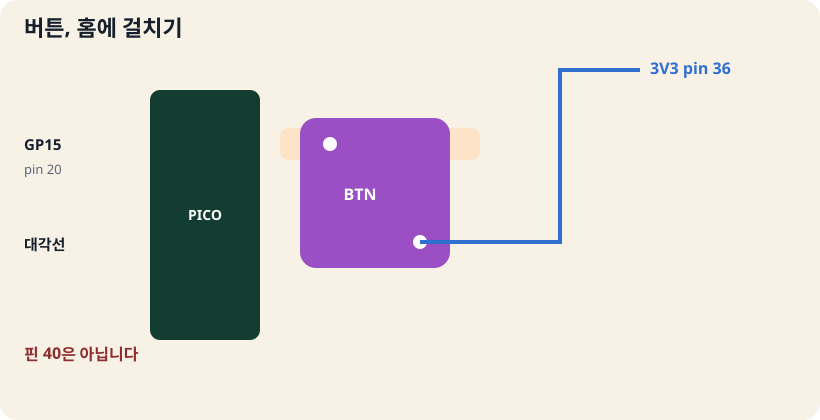

6차시
반응 속도 대결
회로는 버튼과 LED 그대로입니다. 불이 켜지면 누르고, 몇 밀리초인지 셸에서 겨룹니다.
- 시간을 재는 원리
- 노는 법
- 코드
- 막히면
01
원리
원리
time.ticks_ms()는 피코가 켜진 뒤 흐른 시간을 밀리초로 알려 줍니다. 불이 켜진 시각과 버튼을 누른 시각의 차이가 반응 시간입니다. 기다리는 시간을 random.randint로 1.5초에서 4초 사이에서 뽑습니다.연결은 5차시와 같습니다. LED는 GP14, 버튼은 GP15와 3V3(핀 36)입니다.

02
노는 법
- 시작
버튼을 짧게 눌렀다 뗍니다.
- 기다리기
불은 꺼져 있습니다. 켜지기 전에 누르면 너무 일렀어요가 나오고 그 판은 무효입니다.
- 누르기
불이 켜지면 바로 누릅니다. 기록 240 ms처럼 나옵니다. 숫자가 작을수록 빠릅니다.
- 다섯 판
끝나면 최고 기록이 나옵니다. 정지한 뒤 옆 사람과 바꿉니다.
03
코드
reaction.py
from machine import Pin
import time
import random
led = Pin(14, Pin.OUT)
button = Pin(15, Pin.IN, Pin.PULL_DOWN)
def wait_release():
while button.value() == 1:
time.sleep(0.01)
print("버튼을 짧게 누르면 시작. 불이 켜지면 다시 누르세요.")
best = None
for n in range(1, 6):
print(n, "번째")
while button.value() == 0:
time.sleep(0.01)
wait_release()
led.off()
wait_ms = random.randint(1500, 4000)
early = False
t0 = time.ticks_ms()
while time.ticks_diff(time.ticks_ms(), t0) < wait_ms:
if button.value() == 1:
early = True
break
time.sleep(0.01)
if early:
print("너무 일렀어요")
for _ in range(3):
led.on()
time.sleep(0.08)
led.off()
time.sleep(0.08)
wait_release()
continue
led.on()
start = time.ticks_ms()
while button.value() == 0:
time.sleep(0.001)
ms = time.ticks_diff(time.ticks_ms(), start)
led.off()
wait_release()
print("기록", ms, "ms")
if best is None or ms < best:
best = ms
print("오늘 최고")
if best is None:
print("끝. 성공한 기록이 없어요")
else:
print("끝. 최고 기록", best, "ms")
led.off()
막히면
- 시작하자마자 너무 일렀어요 → 버튼을 누른 채 손을 안 뗀 것입니다.
- 기록이 계속 10ms보다 작으면 불이 켜지기 전에 이미 눌린 상태입니다.
- 사람마다 보통 180~350ms입니다.